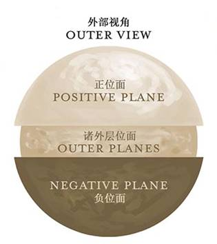

D&D的大宇宙中充斥着众多各不相同的世界，它们以不同的异次元多维空间存在，或称之为存在位面planes of existence。其中也包括了相对平凡的物质位面，即DM通常用以主持冒险的所有世界。在这之外的则是属于原始的元素物质和能量之界域，纯粹思维和理念的国度，或是恶魔与天使的居所和诸神的领域。
许多法术和魔法物品能够从这些位面中获取能量，召唤那里栖息的生物，并与这些位面住民交流或是让冒险者穿梭去该处。随着角色能力和等级的提升，你们也许会需要前往恐怖的深渊之中营救一名伙伴，或是与约瑟园友好的巨人们举杯共饮。你们会在固态火焰的街道上行走，或是在那每日破晓都会有亡者复生的战场上彰显智勇。
物质位面充满了凡俗的生命与平凡的物质，是构成其它位面的精神力与元素力交杂而成的存在物。所有奇幻游戏世界都存在于物质位面中，因此其真是大多数游戏战役的起始地。而多元宇宙中的其他事物都以它们与物质位面的关联而确立。
物质位面的世界是无限丰富的，它们反映的是设定该游戏的DM以及控制角色冒险的玩家们灵活多变的想象力。这里有被魔法摧毁的荒芜星球，有岛屿散布的汪洋世界，有魔法与科技并存或永远在石器时代的世界，还有诸神遍行或被诸神遗弃的世界。

多元宇宙中最为著名的是那些多年来作为官方战役设定发布的世界――包括灰鹰Greyhawk、黑沼Blackmoor、龙枪Dragonlance、被遗忘国度Fogotten Realms、密斯塔拉Mystara、天赋神权Birthright、浩劫残阳Dark Sun以及艾伯伦Eberron。这些世界中都有属于自己的一批批英勇冒险家和狡诈恶徒，都有各自的古老遗迹和失传的神器，以及各自的龙与地下城。而当你们在其中某个世界展开战役时，其将由DM掌管――你们可以将其想象成以该世界为基础，成千上万平行世界的其中之一，这样的世界有时可能与出版物中的内容不太相同。
物质映射Material Echoes
物质位面是个充满魔力的地方，其魔法本质体现于与之共享多元宇宙中心的另两个位面。妖精荒野和堕影冥界是占据了相同宇宙空间的两个平行维度，它们往往被称作映射位面或称为物质位面的镜像位面。二者的世界和地貌仿造自物质位面的自然环境，但表现出来的形态却各有不同――在妖精荒野中会显得华美奇妙，而在堕影冥界则显得扭曲暗淡。物质位面上的一座火山，在妖精荒野中是一座高耸入云的水晶的山峰，其内还闪耀着火柱；而在堕影冥界，山顶则会是一块突出的骷髅状粗糙岩壁。
妖精荒野Feywild，也称作妖精位面Plane
of Fearie，是一片光怪陆离的大地，其内聚居住着充满热切渴望的小人，同时还是音乐与死亡的领域。这里永远处在黎明的辉光中，点缀着在柔风中摇曳的灯火，其下的林地与原野间还穿行着巨大的萤火虫。天空由朝阳亦或是落日的余辉照亮，而太阳静挂空中永不升起或落下，低沉而昏暗地映在天边。在远离喜乐廷Seelie Court辖区的土地上，是蔓延着尖锐荆棘和粘稠的沼泽――正是哀怒精类Unseelie天赐的狩猎场。由林地之精咒唤术Conjure Woodland Beings及类似法术召唤来的妖精都居住于妖精荒野。
堕影冥界Shadowfell，也称幽影位面Plane
of Shadow，是一个光线阴暗之地，其内一切暗淡失色只剩黑白灰。这里弥漫着扼杀光亮的恶毒黑暗，其天空也是一座不见日月星光的漆黑穹顶。
正位面Positive Plane如同穹顶一般罩在其它位面上方，它是充盈着由卑微到高贵，所有生命的光耀能量和原始生命力之源。它的黑暗面是负位面Negative Plane，那里是摧毁生命以及创造不死生物的死亡能量之源。